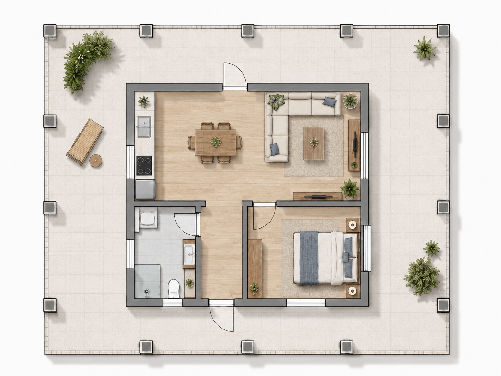
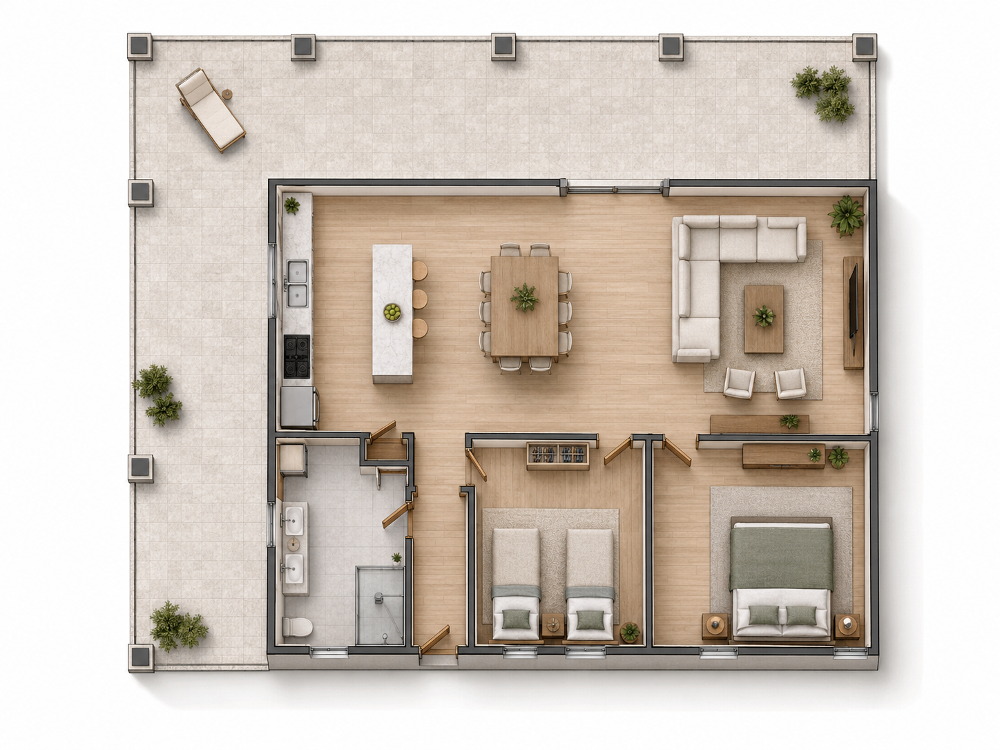
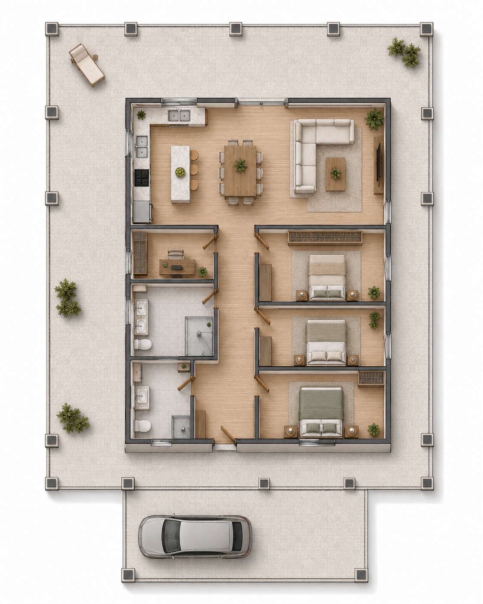
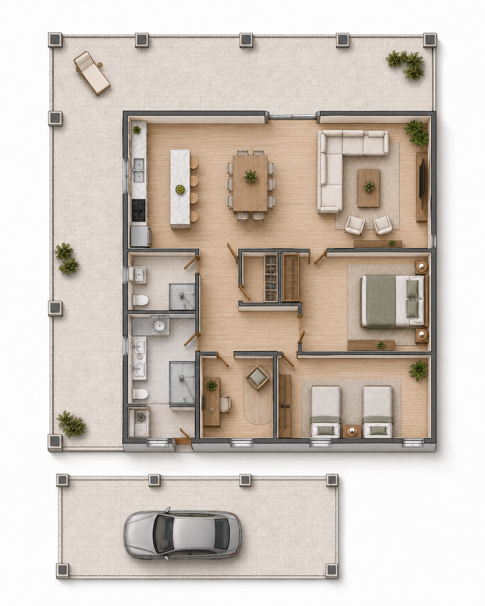
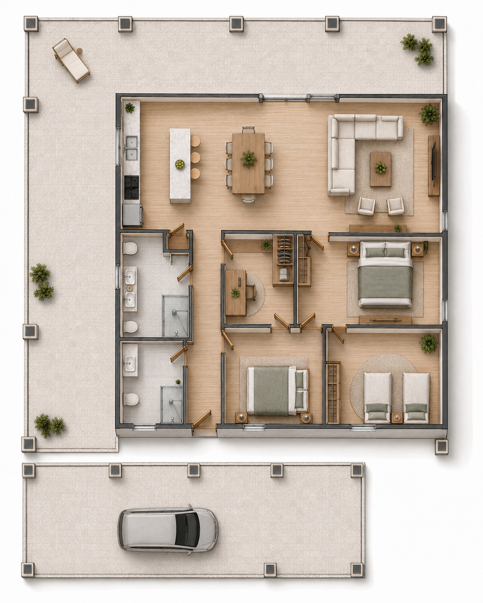
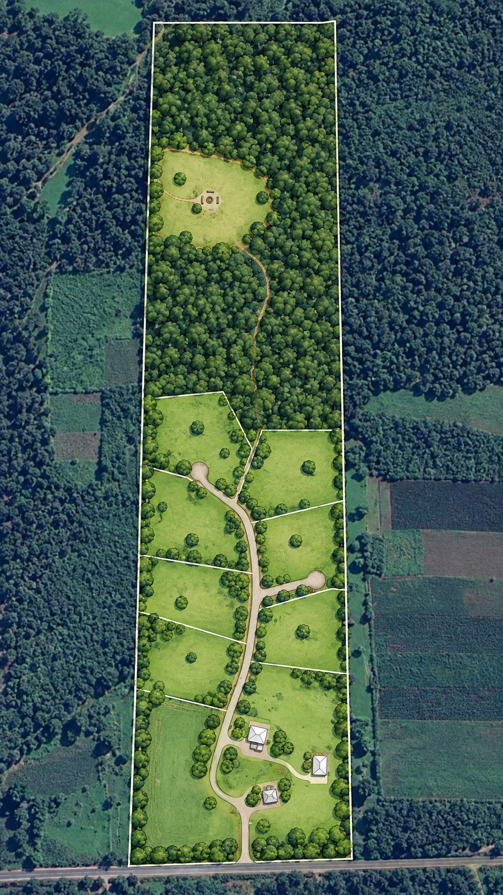
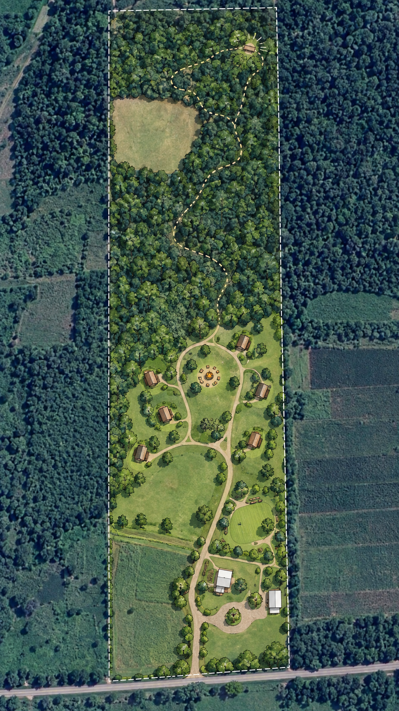
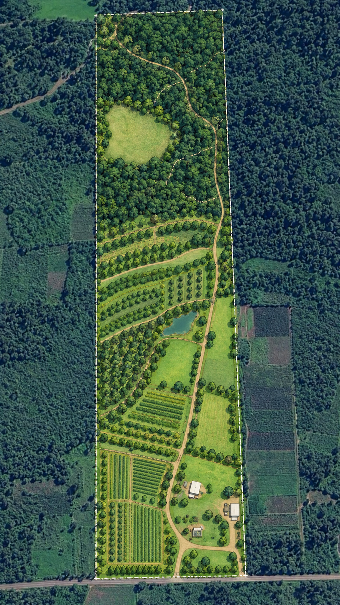
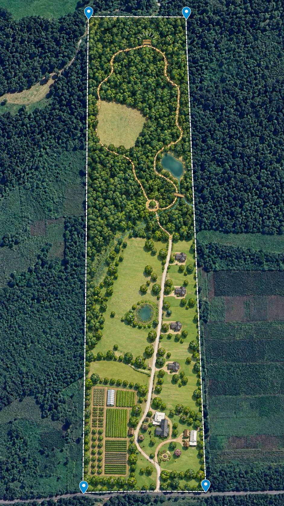

20 Hektar mit mehreren Entwicklungsansätzen
Die Granja del Sol ist bereits Wohnort, landwirtschaftlich nutzbare Fläche und Naturgrundstück zugleich. Für Käufer mit unternehmerischem Blick kommen zusätzlich die vorbereiteten Bauflächen und die Größe des Areals als Ausgangspunkt für unterschiedliche Konzepte hinzu.
Vorhandene Substanz statt grüner Wiese
Die vorhandenen Gebäude, vorbereiteten Bauflächen und unterschiedlichen Flächentypen eröffnen mehrere Entwicklungsrichtungen. Die Beispiele auf dieser Seite greifen diese Ausgangslage auf und zeigen, wie unterschiedlich ein Käufer sie weiterdenken könnte.
Bezugsfertiges Haupthaus
Das bestehende Haus kann als privater Wohnsitz, Betreiberwohnung oder Basis während einer schrittweisen Entwicklung dienen.
Vorbereitete Bauflächen
Ein kleinerer Bungalow sowie eine größere Bodenplatte bieten bereits konkrete Ansatzpunkte für zusätzliche Gebäude.
Unterschiedliche Flächentypen
Acker, Weiden, Wohnbereich und Wald ermöglichen Konzepte, bei denen nicht die gesamte Fläche dieselbe Funktion erfüllen muss.
Die vorhandenen Bodenplatten als Startpunkt
Kleine Bodenplatte: eine Fläche, unterschiedliche Ausbaukonzepte
Die beiden folgenden Visualisierungen beziehen sich auf dieselbe kleinere Bodenplatte. Sie zeigen bewusst zwei unterschiedliche Strategien: einmal einen kompakten Baukörper mit viel überdachtem Außenraum und einmal eine stärkere Nutzung der vorhandenen Fläche als Innenraum.
Denkbare Rollen reichen vom Ferien- oder Gästehaus über eine separate Wohneinheit bis zu einem kleinen Familienhaus.
Zwei Varianten derselben kleinen Bodenplatte


Die vorhandenen Fundamentachsen, Säulenanschlüsse und Abflüsse bilden den technischen Rahmen, innerhalb dessen sich unterschiedliche Grundrisse entwickeln lassen.
Große Bodenplatte: drei mögliche Nutzungskonzepte
Auch die größere Bodenplatte lässt sich mit sehr unterschiedlichen Schwerpunkten nutzen. Die drei Beispiele reichen vom klassischen Familienhaus über gemeinschaftliches Wohnen bis zu einer stärker auf Gäste oder temporäre Bewohner ausgerichteten Lösung.
Mehr Fläche für unterschiedliche Konzepte
Ein älterer Entwurf nutzt innerhalb der deutlich größeren überdachten Gesamtfläche ungefähr 98 m² als Innenbereich. Am äußeren Rand sind Anschlüsse für Säulen vorbereitet; zusätzlich bestehen mehrere konstruktiv interessante Fundamentachsen.
Damit lässt sich die Platte sowohl privat als auch für stärker auf Gäste oder gemeinschaftliche Nutzung ausgerichtete Konzepte weiterdenken.



Wie bei der kleinen Bodenplatte sind Fundamente, Eisenanschlüsse und vorhandene Abflüsse bei einer späteren Ausführung mitzudenken.
Vier Beispiele, wie sich die Fläche weiterdenken lässt
Acker, Weiden, Wohnbereich und Wald müssen nicht demselben Geschäftsmodell folgen. Die vier Skizzen setzen unterschiedliche Schwerpunkte und sollen zeigen, wie vielfältig sich die vorhandenen Flächen kombinieren und schrittweise entwickeln lassen.




Die eingezeichneten Grenzen, Wege, Gebäude und Nutzungszonen dienen der Veranschaulichung. Eine tatsächliche Teilung oder Bebauung richtet sich nach Vermessung, Erschließung und den jeweils geltenden Anforderungen.
Vom Gedanken zum Projekt
Welcher Entwicklungsweg sinnvoll ist, hängt vom konkreten Ziel ab. Bei einem echten Projekt werden aus den Ideen anschließend technische, rechtliche und wirtschaftliche Entscheidungen.
Bau & Statik
Fundamente, bestehende Eisenanschlüsse, Abflüsse und die gewünschte Dach- beziehungsweise Wandkonstruktion müssen zur konkreten Planung passen.
Genehmigung & Teilung
Bei gewerblicher Nutzung, weiterer Bebauung oder einer Aufteilung in separate Lote sind die jeweiligen Anforderungen mit den zuständigen Stellen und Fachleuten zu klären.
Wirtschaftlichkeit
Baukosten, Nachfrage, Betrieb, Vermietung und mögliche Verkaufspreise bestimmen, welcher Ansatz zum eigenen Investitionsmodell passt.
Eine Ausgangslage – verschiedene Entwicklungswege
Die Beispiele sollen Möglichkeiten sichtbar machen und eigene Ideen anregen. Alle Fakten zum Objekt stehen im vollständigen Exposé.
Zurück zum vollständigen Exposé